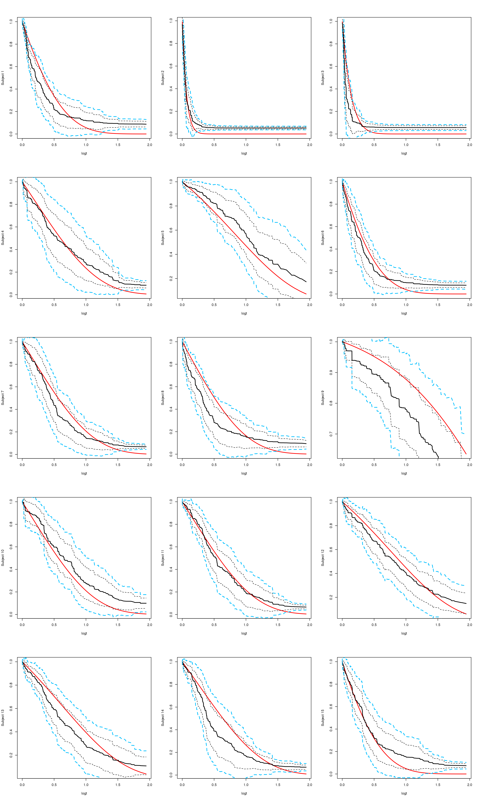
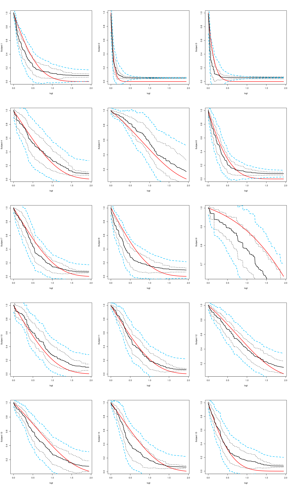
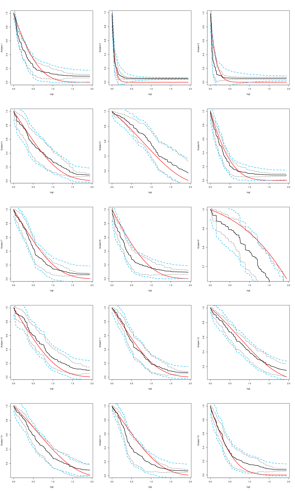
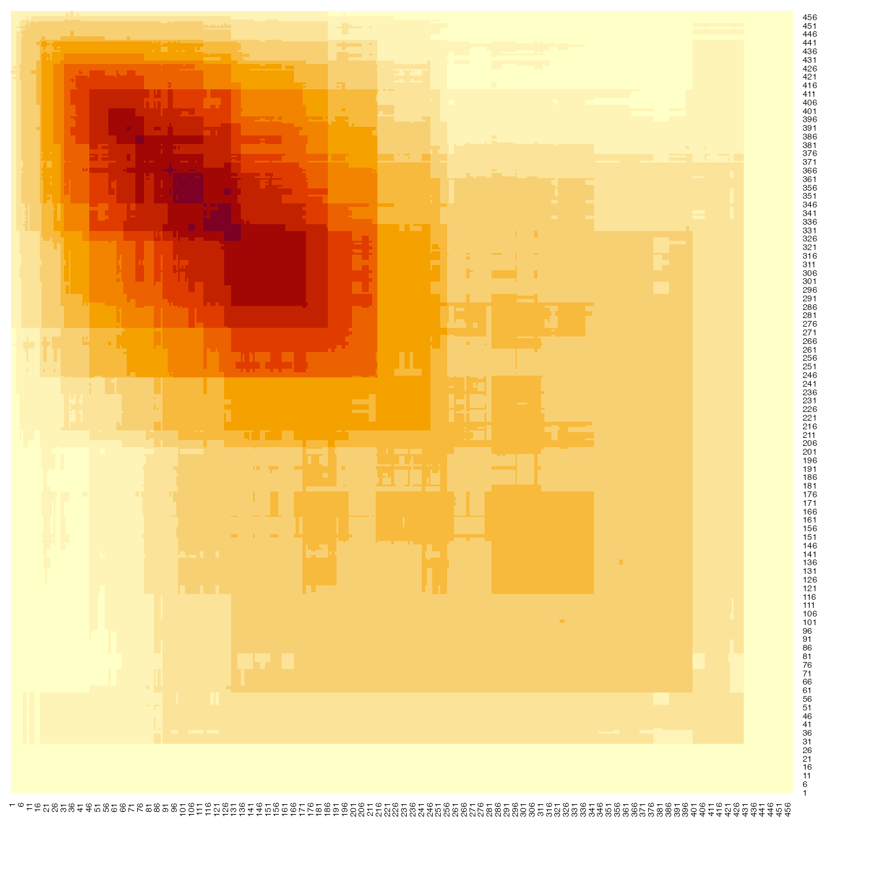
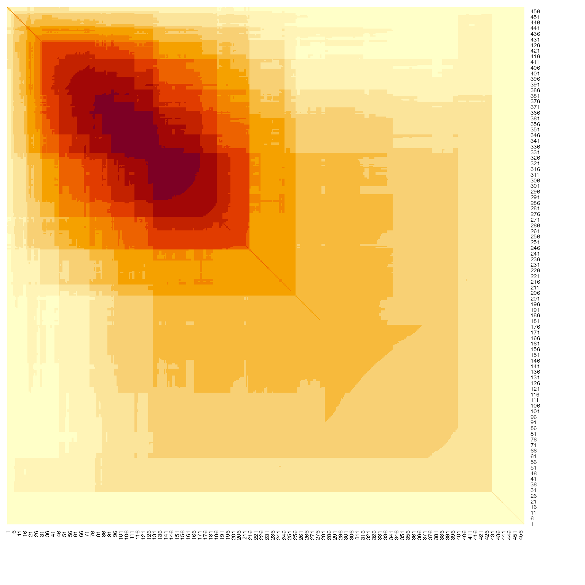

RLT Package Testing Survival Functions and Features
Ruoqing Zhu
Last Updated: July 17, 2025
Test-Surv-Band.RmdInstall and Load Package
Install and load the GitHub version of the RLT package. Do not use the CRAN version.
Confidence Band Estimation
# generate a simpler data
library(RLT)
set.seed(2)
n = 600
p = 20
X = matrix(rnorm(n*p), n, p)
xlink <- function(x) exp(x[, 1] + x[, 3]/2)
FT = rexp(n, rate = xlink(X))
CT = pmin(6, rexp(n, rate = 0.25))
Y = pmin(FT, CT)
Censor = as.numeric(FT <= CT)
mean(Censor)
## [1] 0.765
ntest = 15
testx = matrix(rnorm(ntest*p), ntest, p)
#testx[1, 1:3] = c(0.5, 0, 0.5)
#testx[2, 1:3] = c(-0.5, 0, -0.5)
# get true survival function
timepoints = sort(unique(Y[Censor==1]))
SurvMat = matrix(NA, nrow(testx), length(timepoints))
exprate = xlink(testx)
for (j in 1:length(timepoints))
{
SurvMat[, j] = 1 - pexp(timepoints[j], rate = exprate )
}
RLTfit <- RLT(X, Y, Censor, model = "survival",
ntrees = 20000, nmin = 20, mtry = 20, split.gen = "random",
resample.prob = 0.5, resample.replace = FALSE, nsplit = 5,
param.control = list(split.rule = "logrank", "var.ready" = TRUE),
importance = FALSE, verbose = TRUE, ncores = 10)
## Fitting Survival Forest...
## ---------- Parameters Summary ----------
## (N, P) = (600, 20)
## # of trees = 20000
## (mtry, nmin) = (20, 20)
## split generate = Random, 5
## sampling = 0.5 w/o replace
## (Obs, Var) weights = (No, No)
## importance = none
## reinforcement = No
## ----------------------------------------
## Package is not compiled with OpenMP (omp.h).
##
## Do not have 10 cores, use maximum 1 cores.
start_time <- Sys.time()
RLTPred <- predict(RLTfit, testx, ncores = 10, var.est = TRUE)
## Package is not compiled with OpenMP (omp.h).
difftime(Sys.time(), start_time, units = "secs")
## Time difference of 79.23559 secs
paste("Prediction object size:", format(object.size(RLTPred), units = "MB"))
## [1] "Prediction object size: 24.3 Mb"Naive Monte Carlo
Red line is the truth, black-solid is estimated survival, black-dotted is +/- 1.96 of diagonal. blue-dotted is the naive Monte Carlo approach.
alpha = 0.05
# original Monte Carlo approach without smoothing
start_time <- Sys.time()
SurvBand = get.surv.band(RLTPred, alpha = alpha, approach = "eigen-th-mc")
difftime(Sys.time(), start_time, units = "secs")
## Time difference of 12.11413 secs
par(mfrow = c(ceiling(ntest/3), 3))
logt = log(1 + timepoints)
for (i in 1:ntest)
{
# truth
plot(logt, SurvMat[i, ], type = "l", lwd = 2, col = "red", ylab = paste("Subject", i))
# estimated and 1.96
lines(logt, RLTPred$Survival[i,], lwd = 2, col = "black")
lines(logt, RLTPred$Survival[i, ] - qnorm(1-alpha/2)*sqrt(diag(RLTPred$Cov[,,i])),
lty = 2, col = "black")
lines(logt, RLTPred$Survival[i, ] + qnorm(1-alpha/2)*sqrt(diag(RLTPred$Cov[,,i])),
lty = 2, col = "black")
# naive
lines(logt, SurvBand[[i]]$lower[,1], lty = 2, lwd = 2, col = "deepskyblue")
lines(logt, SurvBand[[i]]$upper[,1], lty = 2, lwd = 2, col = "deepskyblue")
}
Smoothed Rescaling MC Approach
# Monte Carlo approach using smoothed rescaled cov matrix
start_time <- Sys.time()
SurvBand = get.surv.band(RLTPred, alpha = alpha, approach = "smoothed-mc", nsim = 1000)
difftime(Sys.time(), start_time, units = "secs")
## Time difference of 32.91537 secs
par(mfrow = c(ceiling(ntest/3), 3))
logt = log(1 + timepoints)
for (i in 1:ntest)
{
# truth
plot(logt, SurvMat[i, ], type = "l", lwd = 2, col = "red", ylab = paste("Subject", i))
# estimated and 1.96
lines(logt, RLTPred$Survival[i,], lwd = 2, col = "black")
lines(logt, RLTPred$Survival[i, ] - qnorm(1-alpha/2)*sqrt(diag(RLTPred$Cov[,,i])),
lty = 2, col = "black")
lines(logt, RLTPred$Survival[i, ] + qnorm(1-alpha/2)*sqrt(diag(RLTPred$Cov[,,i])),
lty = 2, col = "black")
# naive
lines(logt, SurvBand[[i]]$lower[,1], lty = 2, lwd = 2, col = "deepskyblue")
lines(logt, SurvBand[[i]]$upper[,1], lty = 2, lwd = 2, col = "deepskyblue")
}
Smoothed low-rank Monte Carlo
# a low rank smoothed approach with adaptive bonferoni critical value
start_time <- Sys.time()
SurvBand = get.surv.band(RLTPred, alpha = alpha, approach = "smoothed-lr", r = 5)
difftime(Sys.time(), start_time, units = "secs")
## Time difference of 1.603123 secs
par(mfrow = c(ceiling(ntest/3), 3))
logt = log(1 + timepoints)
for (i in 1:ntest)
{
# truth
plot(logt, SurvMat[i, ], type = "l", lwd = 2, col = "red", ylab = paste("Subject", i))
# estimated and 1.96
lines(logt, RLTPred$Survival[i,], lwd = 2, col = "black")
lines(logt, RLTPred$Survival[i, ] - qnorm(1-alpha/2)*sqrt(diag(RLTPred$Cov[,,i])),
lty = 2, col = "black")
lines(logt, RLTPred$Survival[i, ] + qnorm(1-alpha/2)*sqrt(diag(RLTPred$Cov[,,i])),
lty = 2, col = "black")
# naive
lines(logt, SurvBand[[i]]$lower[,1], lty = 2, lwd = 2, col = "deepskyblue")
lines(logt, SurvBand[[i]]$upper[,1], lty = 2, lwd = 2, col = "deepskyblue")
}
cat(paste("average approximation error:", mean(sapply(SurvBand, "[[", 3))))
## average approximation error: 0.0705629776873851Here is a demonstration of the smoothed covariance approximation code
used internally in the get.surv.band function. The
following is the comparison of two covariance matrices

# generate grid points for kernel
p = dim(ccov)[1]
alltime = 0:(p+1)
alltime = alltime / stats::sd(alltime)
nknots = ceiling( max(alltime)/orthoDr::silverman(1, p) ) + 2
basis = orthoDr::kernel_weight(matrix(alltime),
matrix(seq(0, max(alltime), length.out = nknots)))
# raw marginal variance
mar_var = diag(ccov)
fit <- glmnet::glmnet(basis, c(mar_var[1], mar_var, utils::tail(mar_var, 1)),
alpha = 0, intercept = FALSE,
lower.limits = 0, lambda = 1e-5)
smarvar = stats::predict(fit, basis)
smarvar = smarvar[2:(p+1)]
newmat = ccov
diag(newmat) = smarvar
# find positive definite projection
pdmat = suppressWarnings(Matrix::nearPD(newmat,
keepDiag = TRUE, # keep the diagonal
base.matrix = TRUE,
conv.norm.type = "F",
trace = FALSE, maxit = 200))
sum((pdmat$mat - ccov)^2) / sum(ccov^2)
## [1] 0.001550562
heatmap(pdmat$mat[rev(1:nrow(pdmat$mat)),], Rowv = NA, Colv = NA, symm = TRUE)